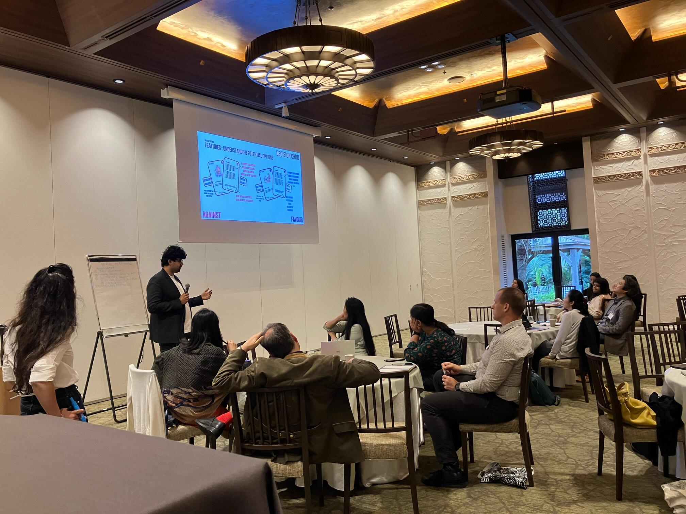
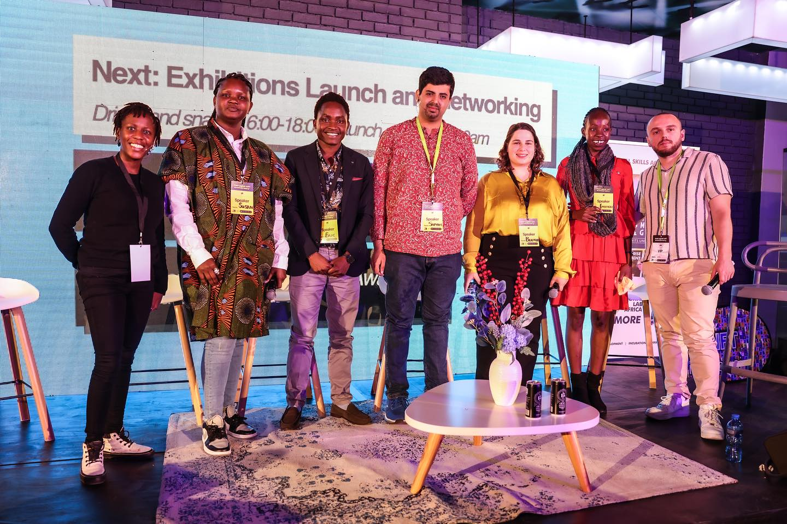
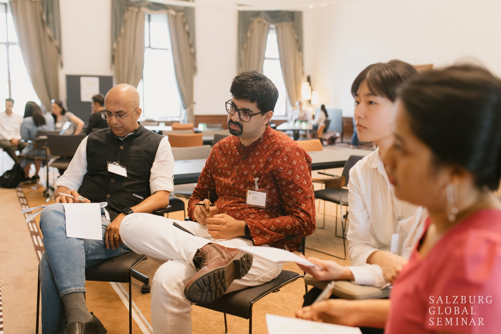
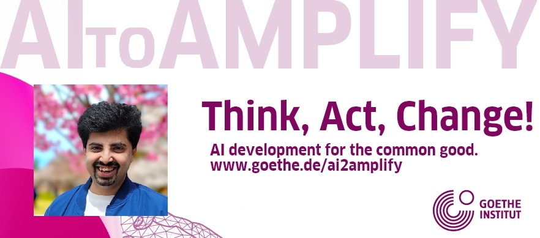
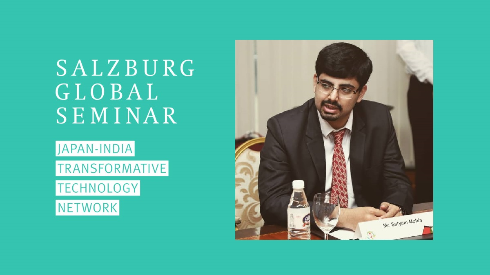
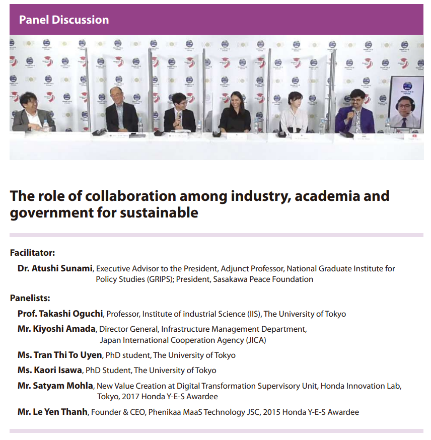
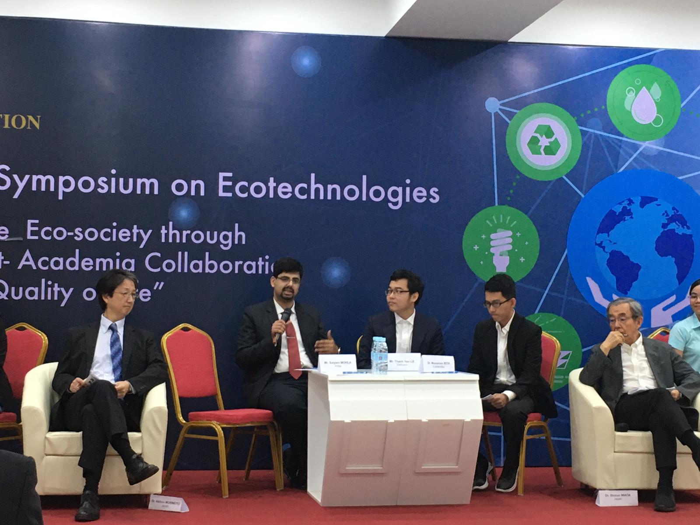
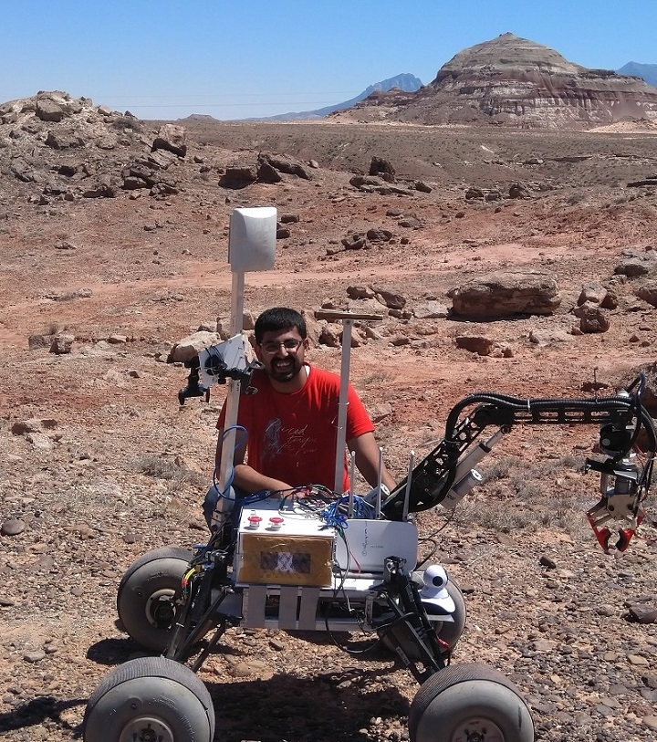

satyam mohla
सत्यम मोहला
サティヤン モーラ
सत्यम मोहला
サティヤン モーラ
Honda Research Institute Europe
Innovation Program Manager
LEADERSHIP
Nippon Fukuoka Fellows
Nippon Foundation Japan & Salzburg Global Seminar Austria
September 2023 - April 2024

Selected Fellows from cohorts 1 and 2 of the Japan-India Transformative Technology Network met in Fukuoka, where they worked intensively on their collaborative initiatives, which were conceived during previous meetings of the Network.
Fak'ugesi African Digital Innovation Festival
Johannesburg, South Africa
September 2023

Fak'ugesi African Digital Innovation Festival is an annual technology, art and culture festival held at the Tshimologong Precinct in Braamfontein, Johannesburg.
Additional Information: Official Website
Salzburg Global Seminar
Schloss Leopoldskron, Austria
Jan 2023 - June 2023

The Japan-India Transformative Technology Network connects and empowers outstanding change-makers in two countries on the forefront of technological progress in Asia – India and Japan. The program offers a platform for those working towards social good to maximize the benefits of various forms of new technologies (including but not limited to artificial intelligence, robotics and automation, blockchain and fintech). Fellows will regularly meet online before convening in person at Schloss Leopoldskron in June 2023.
Additional Information: Official Website
AI2Amplify Fellowship
Goethe Institute, Munich
April 2023 - Nov 2023

The project aims to expand the discourse on artificial intelligence to include relevant voices that are indispensable for the development of AI oriented towards the common good. It aims to question the status quo, provide competences for action and thus show new ways for a sustainable development of AI applications.
Additional Information: Official Website
Japan India Transformative Technology Fellow
Salzburg Global Seminar
Jan 2023 - June 2023

The Japan-India Transformative Technology Network connects and empowers outstanding change-makers in two countries on the forefront of technological progress in Asia – India and Japan. The program offers a platform for those working towards social good to maximize the benefits of various forms of new technologies (including but not limited to artificial intelligence, robotics and automation, blockchain and fintech). Fellows will regularly meet online before convening in person at Schloss Leopoldskron in June 2023.
Additional Information: Personal page
India Lead · Core Organising Team · Panelist
Honda Ecotechnology Forum, Tokyo
April 2019 - July 2021

The Honda Foundation held its Honda Y-E-S Online Forum 2021 on July 10 and 11, 2021 at the Honda Yaesu Building on the theme "Integrating Sustainability into Future Urban Design." The Forum was organized by awardees of the Honda Y-E-S Award, which the Honda Foundation promotes in Vietnam, India, Cambodia, Laos, Myanmar and Bangladesh to engage young scientists and engineers from Asia, including Japan, in discussions on their awareness of issues in the region, the role played by science and technology in resolving these issues.
Initially scheduled to take place in 2020, the COVID-19 pandemic forced postponement of the Forum, and it was held online in 2021. The program consisted of presentations by three guest speakers representing the fields of urban engineering and traffic engineering plus an international cooperation organization in Japan, followed by presentations by the Honda Y-E-S Awardees and a panel discussion.
Additional Information: Official Report • Press Release • Forum 2021 Poster
Panelist
International Symposium on Ecotechnologies, RUPP Cambodia
December 2019, Phnom Penh, Cambodia

The Honda Foundation held a symposium titled “Achieve an Eco-society through Industry-Government-Academia Collaboration toward Sustainability & Quality of Life” in Phnom Penh, the capital of Cambodia, on December 12–13, 2019, in cooperation with the Royal University of Phnom Penh.
The event was attended by Dr. Michiharu Nakamura, Counsellor to the President of the Japan Science and Technology Agency (JST) and member of UN IATT-STI 10, Dr. Nobuko Kashiyama, Senior Vice President of the Japan International Cooperation Agency (JICA), Dr. Kalyan Mey, Senior Advisor, Supreme National Economic Council Royal Government of Cambodia, and approximately 200 representatives from the Honda Foundation and research and educational institutions in Cambodia.
Additional Information: Official Report • Press Release • News, Khmer Times, 2019
IIT Bombay Mars Rover Team: Division Head, Research and Biosciences
Sept 2016 - Aug 2018
The IITB Mars Rover project is a student initiative at IIT Bombay to build a prototype Mars rover capable of performing extra-terrestrial robotics and carrying out scientific experiments, participating in the University Rover Challenge at the Mars Society’s Mars Desert Research Station, Utah. I served as the division head of Biosciences & Research, responsible for the instumentation and biosensing stack on the rover and performing autonomous sample collection and onboard scientific experimentation. I often coordinate with Electical Division for ROS integration, and with Mechanical division to work on sample collection. Biosciences consists of Bioassembly, Astrobiology, Geosciences and Research sub-divisions. As such I am also responsible for developing and acquiring novel research tools, like adapting an pocket-size NIR micro-spectrophotometer called Scio to our onboard rover sensing stack.

Additional Information: 2018 Promo Video • 2017 Promo Video • Poster